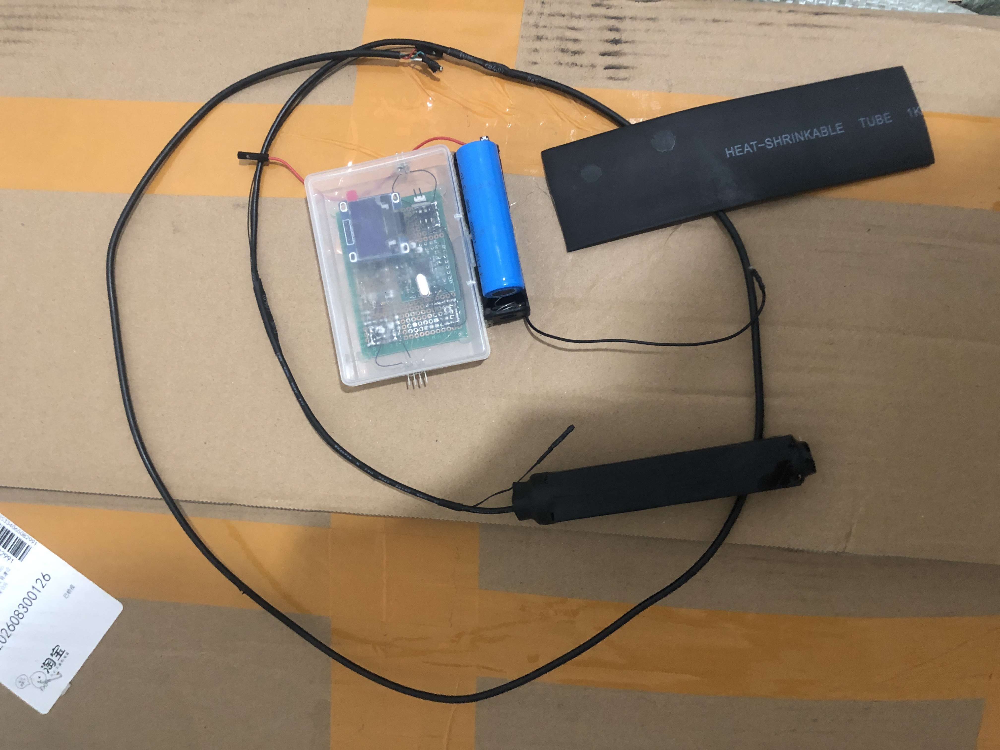

超声波酒精浓度计。背景：制酒车间摘酒过程中，员工需要准确控制接酒终点，目前主要依靠“看花摘酒”经验判断，存在以下问题：主观性强、滞后性、精度不足、成本高。
硬件：超声波探头(通用技术作为独立模块)测声速，ntc测温。
机械结构：铝合金管一端固定换能器另一端固定铁反射板，用热缩管固定。
物理数据：测量不同浓度、温度时的声速数据。
软件：while(获取tof、获取温度、计算浓度（算出目前温度目标tof，差值和浓度系数算出浓度）)；校准/标定（记录浓度53%时不同温度tof）。
出货：

需求：修改探头使之可接触食品(GB4806)；改进高温测温跳变(酒精内温度不均匀)、飞线不稳定等问题。
方案：把铝合金改为玻璃->不锈钢主体、0.1mm厚玻璃隔板隔开不能接触食品的超声波换能器并在内部和不锈钢用环氧树脂固定、多个ntc分布测温、pcb代替洞洞板。
结果：失败，玻璃难加工；不锈钢切割焊接处的酸洗、表面光亮目前无法完成。
个人评价：我的机械结构相关能力较弱，一期就意识到了当时就开始建机械材料库但到二期还是不够，设计还行但加工工艺较差，但这部分很重要又不能外包出去。后续客户想继续做的话找其它人继续做。
业务：
接(报价要合适；尽量直接对接终端用户，避免中间环节低效)。
做(日报、需求谈判（范围）)。
交(注意用法不要太复杂，竞品对比)。
硬件：超声波换能器、浮栅晶体管、模拟电和数字电分开、mos管、高速运放；要搞一分钟制版法(失败)；大道至简，基础器件，例如：收发一体、触发器高电平->逻辑门高电平->晶体管模拟逻辑门->浮栅晶体管、外部161计数->外部与门->内部门控。
物理-液体中声速。
机械结构-机械材料库。
软件-锁。